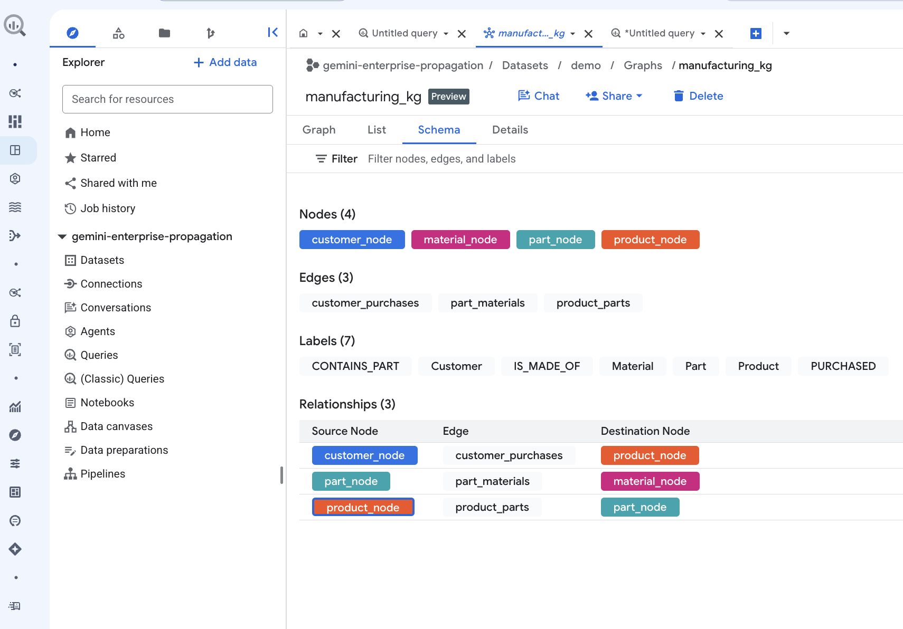
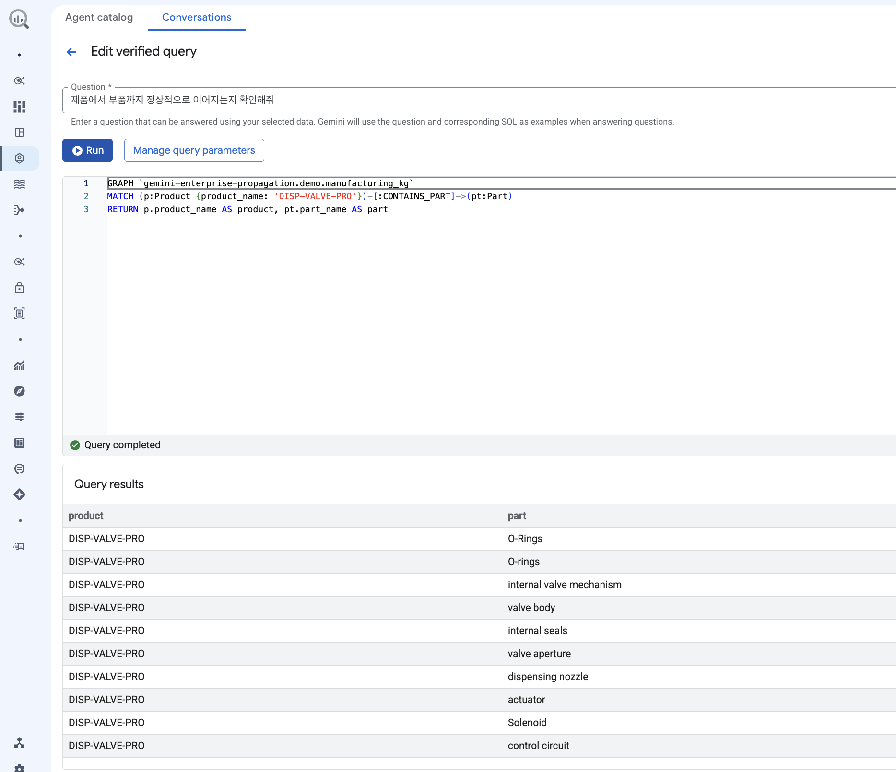

복잡한 SQL 및 그래프 쿼리(GQL) 구문을 알 필요 없이,
자연어 대화를 통해 BigQuery Knowledge Graph 데이터를 조회하고 분석할 수 있는 에이전트를, Gemini Enterprise App과 연동해 보세요!
자연어 질의를 고성능 SQL로 자동 변환하여 데이터 엔지니어 대기 시간 Zero화
OAuth 커넥터 기반으로 사용자 본인의 IAM 권한을 전달하여 엄격한 보안 유지
전사 표준 메타데이터 및 Verified Queries 기반으로 정확성 있는 SQL 실행
Gemini Enterprise에 연동된 BigQuery Conversational Agent는 사용자가 자연어로 질문하면 즉각적으로
수일 이상 소요되던 데이터 분석 및 리포트 작성 대기 시간을 수초~수분 단위로 단축하여 의사결정 속도를 끌어올립니다.
지식 그래프를 활용해 사일로화된 데이터를 유기적으로 연결합니다. 고객 - 제품 - 부품 - 원자재로 이어지는 복잡한 공급망 네트워크와 BOM의 관계를 분석하고, 잠재적 리스크나 공급 병목 현상등을 선제적으로 파악 할 수 있도록 지원합니다.
복잡한 데이터를 요약해 비즈니스 인사이트를 도출합니다. Glossary 기능을 연계하여 도메인 고유 전문 용어를 정확하게 반영한 분석결과를 제공합니다.
Gemini Enterprise App(GE App)의 대화형 인터페이스와 BigQuery Studio의 데이터 에이전트 엔진이 A2A(Agent-to-Agent) 및 OAuth IAM 체계로 밀접하게 결합된 아키텍처입니다.
BigQuery Studio 'Agent Catalog' 메뉴에서 대화형 에이전트를 생성하고, 분석 대상이 될 Knowledge graph를 지식 소스로 지정합니다.
System Instructions(시스템 지침)을 등록하고 자주 사용하는 쿼리를 Verified Queries로 설정하여 답변 정확도를 극대화합니다.


Gemini Enterprise 관리 콘솔에서 A2A (Agent-to-Agent) 에이전트를 등록 및 관리 권한을 프로비저닝합니다.
BigQuery에서 정의한 에이전트의 OpenAPI 및 Agent JSON 스키마 명세를 검증하고 설정을 완료합니다.
에이전트를 활용할 특정 비즈니스 사용자 그룹 혹은 개별 사용자에 접근 권한 공유.
Gemini Enterprise 대화창에서 업무 중 궁금한 점을 자연어로 질의합니다.
예시: "지난달 품목별 평균 판매 가격이 가장 높았던 정보는 무엇인가요?"
에이전트가 변환한 최적의 BigQuery SQL이 실행되어 시각적 데이터 테이블과 핵심 인사이트 요약 결과가 대화창에 즉시 제공됩니다.
OAuth IAM 전달로 민감 데이터 노출 위험 제로, Knowledge Catalog 접지로 환각 최소화, BigQuery Audit Logs (Job History) 기반 쿼리 수행 이력 및 비용 모니터링 완벽 지원.
현장 관리자 및 생산 기술 담당자가 개발자 도움 없이도 설비별 가동률, 주요 부품 교체 주기, 예방 보전 트렌드를 자연어로 실시간 조회합니다.
비즈니스 효과:
리포트 요청부터 수령까지 수일 소요되던 프로세스를 30초 대화로 단축.
데이터 팀이 미리 검증한 Verified Query 및 전사 용어집(Glossary)을 기반으로 정확도가 보장된 핵심 경영 지표 및 수치를 산출합니다.
비즈니스 효과:
SQL 오류 및 환각 현상 없이 검증된 전사 표준 KPI 보고서 자동화.
보안 담당자와 경영진은 사용자 IAM 권한을 완벽 승계받은 에이전트를 통해 접근 제어를 유지하면서 전사 데이터 활용도를 높이고 Audit Log를 모니터링합니다.
비즈니스 효과:
민감 정보 유출 방지 및 BigQuery 쿼리 실행 비용의 명확한 투명성 확보.
Gemini Enterprise 대화창에 직접 입력하여 사용할 수 있는 추천 프롬프트 예시입니다.
DISP-VALVE-PRO)에서 발생할 수 있는 결함 시나리오를 자재 성분부터 정비 액션까지 한 라인으로 쭉 펼쳐서 확인해줘"